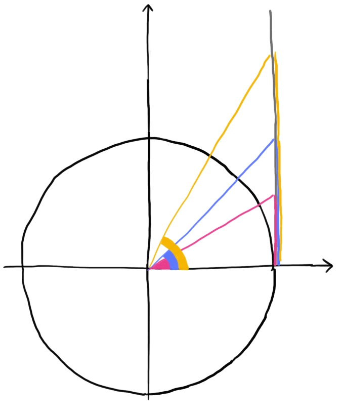
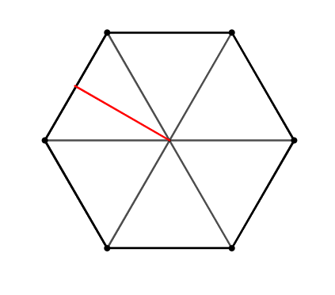

Schema: seno, coseno dei multipli di \(\frac{\pi}{6}\), \(\frac{\pi}{4}\), \(\frac{\pi}{3}\), \(\frac{\pi}{2}\)
Multipli di \(\dfrac{\pi}{3}\) e \(\dfrac{\pi}{6}\)
\(\longleftrightarrow\)
lato corto: \(\dfrac{1}{2}\)
lato lungo: \(\dfrac{\sqrt{3}}{2}\)
Multipli di \(\dfrac{\pi}{4}\)
\(\longleftrightarrow\)
\(\dfrac{\sqrt{2}}{2}\)
Multipli di \(\dfrac{\pi}{2}\)
\(\longleftrightarrow\)
\(0\,\,\) oppure \(\,\,1\)
Schema: tangente dei multipli di \(\frac{\pi}{6}\), \(\frac{\pi}{4}\), \(\frac{\pi}{3}\), \(\frac{\pi}{2}\)
Multipli di \(\color{#E93E8D}{}\frac{\pi}{6}\), \(\color{#5D78FE}{}\frac{\pi}{4}\) e \(\color{#F5B501}{}\frac{\pi}{3}\)

\(\color{#F5B501}{\sqrt{3}}\)
\(\color{#5D78FE}{1}\)
\(\color{#E93E8D}{\frac{\sqrt{3}}{3}}\)
Multipli di \(\dfrac{\pi}{2}\)
\(\longleftrightarrow\)
La tangente non è definita
Esercizio 1
Attraverso questo esercizio potete allenare la memoria su seno, coseno e tangente degli angoli multipli di \(\dfrac{\pi}{6}\), \(\dfrac{\pi}{4}\), \(\dfrac{\pi}{3}\) e multipli di \(\dfrac{\pi}{2}\)
Il triangolo rettangolo in figura ha l'ipotenusa \(a\) di misura \(4\) unità e l'angolo \(\beta\) di misura \(36°\).
Risolvere il triangolo.
Svolgimento:
Esercizio 5
Il triangolo rettangolo in figura il cateto \(b\) di misura \(12\) unità e l'angolo \(\alpha\) di misura \(65°\).
Risolvere il triangolo.
Esercizio 6
Consideriamo l'esagono regolare in figura. Il segmento evidenziato in rosso misura \(10\) unità.
Individuare la misura dei lati dell'esagono e dei suoi angoli.

Suggerimento:
Un esagono può essere visto come composto da dodici triangoli rettangoli, quindi possiamo
sfruttare la definizione geometrica di seno, coseno e tangente.